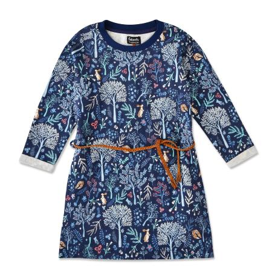

Платье Futurino Fashion синее

Стоимость: 799 руб.
Описание товара
Детям от 7 лет до 12 лет
Синее платье Futurino Fashion поможет разнообразить повседневный гардероб.
Модель с тонким плетеным ремешком украшена контрастным узором с анималистическим мотивом.
Характеристики товара
- Код товара: 2035520001sup
- Артикул: Forest 2-D6I3
- Бренд: Futurino Fashion
- Страна-производитель: Индия
- Материал: 100% хлопок
- Габариты упаковки: 30 x 5 х 30 см
- Вес упаковки: 0.29 кг.
Подробное описание товара
- Прочный дышащий хлопок
- Приятная на ощупь, ворсистая изнанка
- Круглый окантованный вырез
- Прямой крой
- Длинные рукава
Обращаем Ваше внимание, что правильное определение размера детской одежды напрямую зависит от индивидуальных особенностей ребёнка.
© Все права защищены